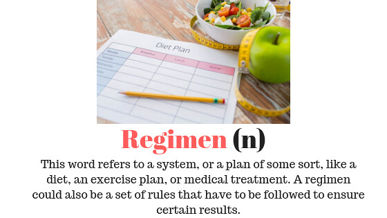

It is important to realize that working out and dieting is very easy and very obtainable. With proper dieting and proper technique, your goals could be very achievable. In terms of dieting, it all comes down to calories consumed versus calories burned or expended. Depending on your goals, you may want to eat less and work out more, or even eat more and still work out. In terms of technique, depending on the excerise, there are proper and improper ways to work out. When in tandum, working out correctly and dieting properly is not only easy, but very easy to integrate in your everyday life. With that in mind, you just need to decide what training and dieting regimen is right for you.
Picture of what a regimen is:
